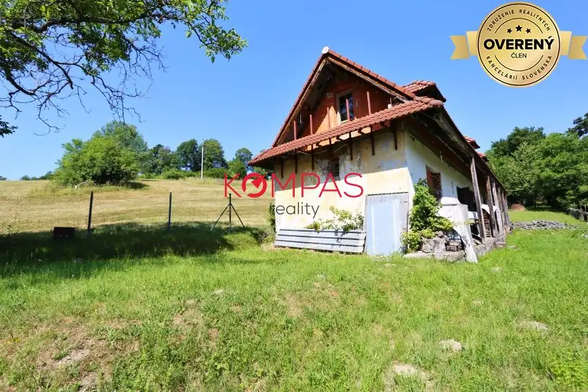
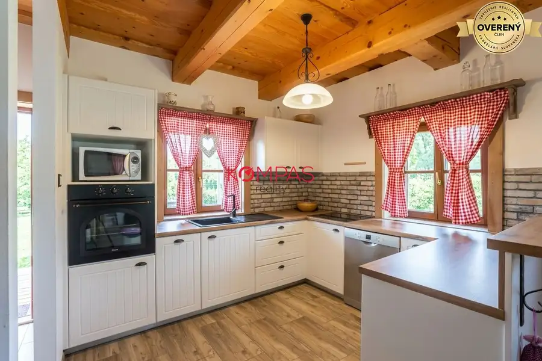
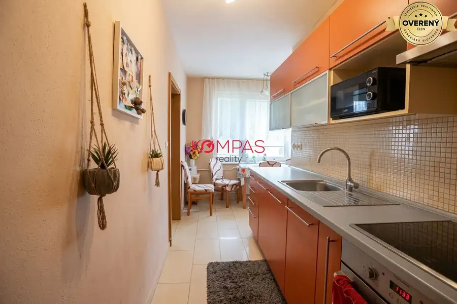

Veľký, tehlový 3-izb.byt v priamom centre mesta s veľkou lodžiou
Zvolen
- Dispozícia3-izbový
- Plocha70 m²
- Poschodie2. z 3
- Stavpôvodný
O nehnuteľnosti
ZNÍŽENÁ CENA!!!
Obhliadky robím aj cez víkend a neskôr večer, tak neváhajte a volajte za obhliadku.
Ponúkame Vám nádherný, veľký 3 izbový byt, ktorý je v najlepšej časti mesta Zvolen. Má skvelú polohu, lodžiu, je tehlový a má predzáhradku – absolútne ideálny byt.
DISPOZIČNÉ RIEŠENIE NEHNUTEĽNOSTI
:
Byt pozostáva zo vstupnej chodby, troch izieb, kuchyne, špajze, kúpeľňa a oddeleného WC a veľkej lodžie. K bytu prislúcha pivnica.
POPIS NEHNUTEĽNOSTI :
• rozloha bytu je 75 m2, na 2 poschodí
• náklady na bývanie sú 160€ vrátane všetkých energií pre 1 osobu
• priame centrum mesta – najlepšia lokalita
• plastové okná
• tehlová bytovka
• veľká až 5 metrová lodžia
• zachovalé parkety
• murované jadro s oddelenou dispozíciou
• výborná dispozícia – možnosť zmeny dispozície
• k bytu prislúchajú dve pivnice
• energetický certifikát nie je k dispozícii
• osobné vlastníctvo, financovanie hypotékou možné (pomôžeme Vám s jej vybavením)
BYTOVÝ DOM:
Bytový dom má skvelú polohu. Kompletná občianska vybavenosť na pár krokov. Bytovka prešla obnovou ako je zateplenie, nové vchodové dvere.
CELKOVÝ DOJEM MAKLÉRA:
Za mňa je toto skvelý byt a poviem Vám prečo.
- Bytovka je tehlová, čo zaručuje perfektnú klímu počas celého roka. V lete nepotrebujete klímu a v zime nemusíte veľa kúriť.
- Byt má veľkú 5 metrovú lodžiu otočenú do záhrady nie na cestu.
- V byte sú zachovalé parkety.
- Byt je orientovaný až na 3 svetové strany.
- Murované jadro.
- Výborná dispozícia – v tejto fáze si určíte vstupy do izieb, priestranná kuchyňa
- A tá lokalita? No bez preháňania, lepšiu v celom Zvolene nenájdete. Je tu pokoj ako na vidieku.
Dlho neváhajte, lebo takýto byt si nájde majiteľa rýchlo. Určite odporúčam túto nehnuteľnosť!!!
UVAŽUJETE O PREDAJI? Bezplatne odhadneme cenu Vašej nehnuteľnosti aj horizont predaja. Táto služba je u nás úplne ZADARMO.
PREDÁME AJ VAŠU NEHNUTEĽNOSŤ STAČÍ LEN ZAVOLAŤ!
Naša realitná kancelária pre Vás zabezpečí kompletný servis od začiatku až po koniec. Od začiatku sa postaráme o profesionálnu inzerciu, profesionálne obhliadky, následne sa postaráme o vypracovanie kúpnych zmlúv, kompletný právny servis potrebný k predaju či kúpe nehnuteľností, znalecký posudok, kataster, hypotekárny úver, prepis všetkých energií a protokolárne odovzdanie nehnuteľnosti. V prípade potreby zabezpečíme pre Vás statický posudok, geometrický plán, vypracovanie kompletnej projektovej dokumentácie, vypratanie nehnuteľnosti, profesionálne pripravenie nehnuteľnosti na predaj, iné právne poradenstvo. S nami je predaj/kúpa zábava, stačí nás vyskúšať – tešíme sa na Vás.
TEŠÍM SA NA OBHLIADKU S VAMI
, kedykoľvek ma kontaktujte na tel.č. . Ak máte záujem o obhliadku pre ponuku s kódom FRBT418ZV volajte mi kedykoľvek, kontaktovať ma môžete aj na Prípadne ak sa chcete niečo opýtať osobne, nájdete nás v kancelárií na Námestí SNP 43 vo Zvolene oproti Katolíckemu kostolu medzi obchodom Pri Srdiečku a lekárňou.
Parametre
| Celková rozloha | 75 m² |
|---|---|
| Úžitková plocha | 70 m² |
| Poschodie | 2/vyššie poschodie |
| Počet poschodí | 3 |
| Počet izieb | 3 |
| Stav | pôvodný |
| Odvoz odpadu | áno - separovaný |
| Internet | telefónna linka |
| Kúpeľňa | vaňa |
| Vykurovanie | spoločné |
| Lódžia | áno - 1 |
| Pivnica | áno |
| Výťah | nie |
| Parkovanie | verejné |
| Zateplený objekt | áno |
| Káblová televízia | áno |
| Predzáhradka | áno |
| Bezbariérový prístup | nie |
| Okná | plastové |
| Dátum zverejnenia | 15. 7. 2026 |
Kde to je
Mohlo by Vás zaujímať

Rodinné domy10 95 000 €Dom ideálny pre ľudí čo hľadajú samotu, pokoj a prírodu Hronská Dúbrava 2-izbový113 m² Ponúkame Vám rozprávkový domček v absolútnom lone prírody. Dom je vhodný aj na trvalé bývanie, samozrejme po dokončení začatej rekonštrukcie. Ideálna…
Rodinné domy10 250 000 €Novostavba domu v modernom vidieckom štýle, obklopená prírodou a s veľ Očová 4-izbový1040 m² Obhliadky robím aj cez víkend a neskôr večer, tak neváhajte a volajte za obhliadku. Ponúkame Vám na predaj nádhernú novostavbu blízko Zvolena. Dom sa…
Byt10 189 990 €Prerobený 3-izb.byt s lodžiou na krásny výhľad, zlatý potok Zvolen 3-izbový82 m²7. podlažie Obhliadky robím aj cez víkend a neskôr večer, tak neváhajte a volajte za obhliadku. Ponúkame Vám nádherný, veľký 3 izbový byt, ktorý je vo výbornej a…